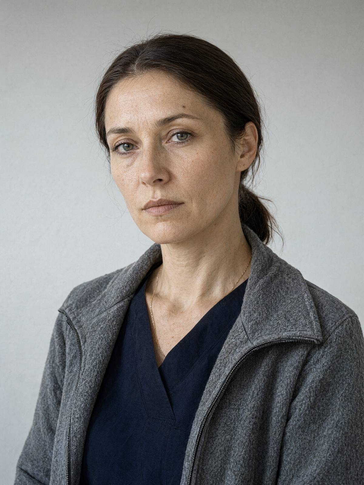

Місто: Львів
Дата: 13.11.2024
Час початку: 12:10
Час закінчення: 12:54
Склав: капітан поліції Стасюк О.М., старший слідчий СВ Галицького ВП ГУНП у Львівській області
Місце складання: Галицький відділ поліції ГУНП у Львівській області
Перед складанням пояснення мені роз'яснено, що згідно зі ст. 63 Конституції України ніхто не зобов'язаний давати показання чи пояснення щодо себе, членів своєї сім'ї та близьких родичів. Мені також роз'яснено моє право користуватися правовою допомогою захисника та право подавати клопотання. Я розумію свої права. Пояснення даю добровільно.
Я, Гнатів Вікторія Олегівна, хочу пояснити наступне.
Питання: Пані Вікторіє, розкажіть, будь ласка, про ваші стосунки з Андрієм Сенишиним.
Ми разом близько чотирьох років. Познайомилися восени 2020-го, він тоді потрапив до нас у приймальне після ДТП, я його оглядала. Потім якось само так вийшло: спершу він приходив на каву, потім почав лишатися. Я в нього бувала три-чотири ночі на тиждень, а у себе на Сихівській майже не живу, там тільки речі. Андрій був спокійний, розважливий, у нього все було по поличках. Мене це тримало. Навесні ми з ним говорили про те, щоб розписатися. Він хотів, а я все відкладала, бо на роботі був шалений рік і не було голови ні на що.
Я сама з Стрия. Мама все життя працювала санітаркою, ми жили в гуртожитку, і я рано зрозуміла, що за все треба платити самій і що ніхто не прийде з допомогою. Може, тому Андрій був для мене таким спокоєм. Він ніколи не лякав мене грошима, хоча в його домі теж було не завжди легко. Я його дуже любила, по-своєму. Він це знає.
Питання: Коли ви востаннє бачили Андрія Сенишина?
Того дня я його не бачила. Він подзвонив мені близько шостої вечора, сказав, що страшенно втомився, що ляже рано і щоб я не чекала на нього. Я була вдома. Близько пів на восьму поїхала на зміну, тож мені ніколи було думати про його втому.
Питання: Розкажіть про вашу роботу 12 листопада.
У мене була нічна зміна з 20:00 до 8:00 у ЛМЛШД № 2, на Буковецькій, 40. Я там працюю в приймальному вже дванадцять років, нічні зміни для мене звичні. Того вечора через відключення світла в місті людей було багато, у коридорі все ходило, двері не зачинялися. Я була при роботі до ранку, не до телефону. Це можуть підтвердити мої колеги.
Питання: Чи бувало, що ви запізнювалися на зміну?
Ніколи, або майже ніколи. Я звикла приходити за кілька хвилин до початку, переодягнутися, випити кави і вже стояти біля каталки. Ви розумієте, у нас не лікарня, а конвеєр. Того вечора я була сама не своя, після його дзвінка в голові все крутилося.
Питання: Чи були у вас контакти з Сенишиним після того дзвінка?
Так, було повідомлення, о 23:07. Я тоді сиділа в ординаторській, на перерві, світла в місті ще не було, а в нас у лікарні все на генераторах, але в ординаторській було тихо, і я трохи посиділа з телефоном. Він написав мені: «Добраніч, люблю». Відповідати не стала, бо була на роботі й не хотіла сваритися. Ось скрін, я його зробила в машині, перед тим як зайти сюди.
(Свідок показує екран телефону: чат «Андрій ❤️», останнє повідомлення від 12.11, 23:07. Вище видно повідомлення свідка від 11.11: «Ти як? Не переживай через Макса».)
Питання: Ви згадали Максима. Що вам відомо про його стосунки з батьком?
Андрій мені розповідав, що син знову почав грати. Він це відчував, навіть коли Максим мовчав. Одинадцятого вони жахливо посварилися, я це знаю з Андрієвих слів. Максим прийшов по гроші, Андрій не дав, і Максим кричав, що батькові завжди на нього було начхати, і погрожував, що той ще пошкодує. Я тоді написала Андрію, щоб він не переживав через Макса. Він і переживав, звісно. Андрій тримав готівку в шухляді столу в конторі, і Максим про цю шухляду знав. Я не кажу, що він щось зробив. Я просто кажу, що він знав, де гроші, і що був дуже злий.
Питання: Чи були в Андрія конфлікти з іншими людьми?
Так, був такий Тарас Кульчицький, забудовник. Андрій називав його бандитом. Він приходив до контори минулого тижня і кричав на Андрія, це чула вся приймальня. Я не знаю, що вони не поділили. Андрій про свої справи зі мною говорив мало, казав, що мені це не треба. Але Кульчицький його лякав, це точно.
Питання: Що вам відомо про обставини смерті Андрія Сенишина?
Пан Стасюк мені сказав по телефону близько пів на одинадцяту, що Андрія знайшли біля підніжжя сходів у конторі і що, ймовірно, він упав зі сходів. Я… (плаче, пауза) Господи, я ж стільки разів просила його не ходити зі свічкою по тих сходах. Особливо коли світла немає, він завжди тягнув її з собою, казав, що так спокійніше, а ті сходи круті, та ще й майже без світла. Я йому казала: «Андрію, ти ж гепнешся». І ось.
Питання: Чи маєте ви ще що додати?
Більше нічого. Я прошу вас знайти того, хто це зробив. Андрій був доброю людиною, він не заслужив такого кінця. Я сама зараз не розумію, як мені жити далі. Мені важко, пробачте.
Пояснення записано з моїх слів у присутності слідчого.
З моїх слів записано вірно, мною прочитано.
/підпис/ Гнатів В.О.
Слідчий: /підпис/ капітан поліції Стасюк О.М.